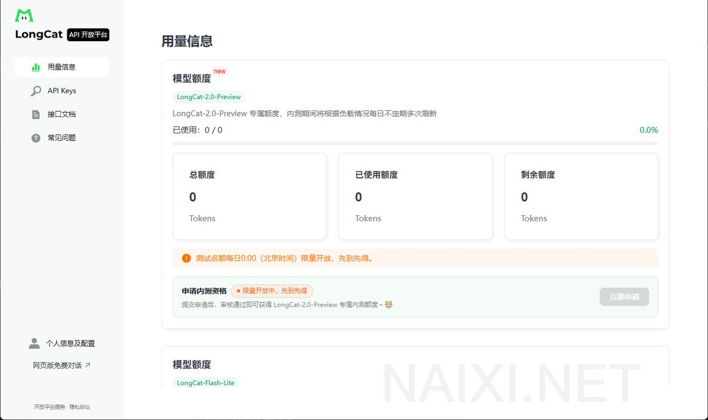
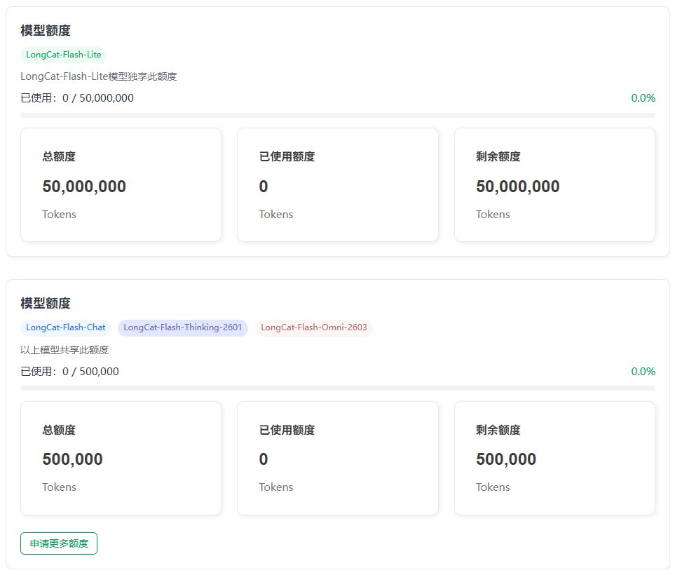
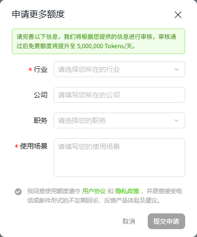
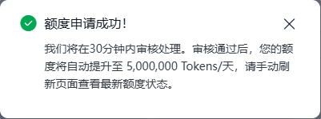

LongCat-2.0-Preview 第二阶段内测已开启，每日09:00:00 和 21:00:00（UTC+8）限量开放，先到先得。
可以填写评论区问卷，说是会在2个工作日为您发放！

可以填写评论区问卷，说是会在2个工作日为您发放！




美团旗下龙猫新模型LongCat-2.0-Preview专属额度，内测期间将根据负载情况每日不定期多次刷新，新模型限时申请👉https://t.co/Mkb8GgAsni
每天1000万token额度，差不多2小时重置一下额度，使劲薅！
另外还有几个模型LongCat-Flash-Chat、
LongCat-Flash-Thinking-2601、 https://t.co/qfm2jmYJz7
每天1000万token额度，差不多2小时重置一下额度，使劲薅！
另外还有几个模型LongCat-Flash-Chat、
LongCat-Flash-Thinking-2601、 https://t.co/qfm2jmYJz7